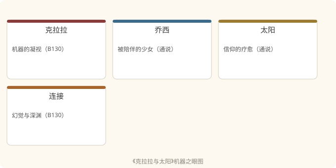

克拉拉与太阳
一、基本信息
| 作者 | 石黑一雄 |
|---|---|
| 成书/出版 | 2021年（Britannica B130：Klara and the Sun——科幻题材） Kazuo Ishiguro — Encyclopaedia Britannica（百科全书） |
| 国别/地区 | 英国 |
| 时代 | 现当代 · 21世纪20年代初 |
| 体裁 | 长篇小说 |
| 语言 | 英语 |

《克拉拉与太阳》机器之眼图（主题·结构图）
二、创作背景
Britannica（B130）：Klara and the Sun——'科幻题材（Britannica：Never Let Me Go, Klara and the Sun）'。
Britannica（B130）：石黑一雄2017诺奖——'uncovered the abyss beneath our illusory sense of connection with the world'；主题'记忆、悔恨、身份、不可靠叙述者'。
题材（通说待核）：人工智能'人工智能朋友'克拉拉观看世界与爱。
三、内容脉络
（通说待核——B130未载剧情）机器人克拉拉与病弱少女乔西的陪伴。
（通说待核）太阳的疗愈神话：AF 的信仰。
四、主要人物表
| 人物 | 身份 | 说明 |
|---|---|---|
| 克拉拉 | 人工智能朋友（AF） | （B130 书名人物） |
| 乔西 | 少女 | （通说待核，B130未载） |
五、主题与艺术特点
- 连接的幻觉（B130：illusory sense of connection）。
- 爱的机器化（通说待核）。
- 不可靠叙述者——机器之眼（B130 主题语系）。
六、影响与评论
- Britannica：2017诺奖（B130）。
Kazuo Ishiguro — Encyclopaedia Britannica（百科全书） - Britannica：'科幻题材'定位（B130）。
Kazuo Ishiguro — Encyclopaedia Britannica（百科全书）
七、阅读建议
难点
- 机器人视点的语感。
- 基因定制社会（通说待核）。
- 《克拉拉与太阳》中译本（上海译文等——通说待核）。
- 英文原版。
石黑一雄新读者首选；与《莫失莫忘》对读。
八、待核实
- 乔西人名核对（B130未载）。
- 2021年出版（Faber说）待核。
- 'AF'术语细节待核。